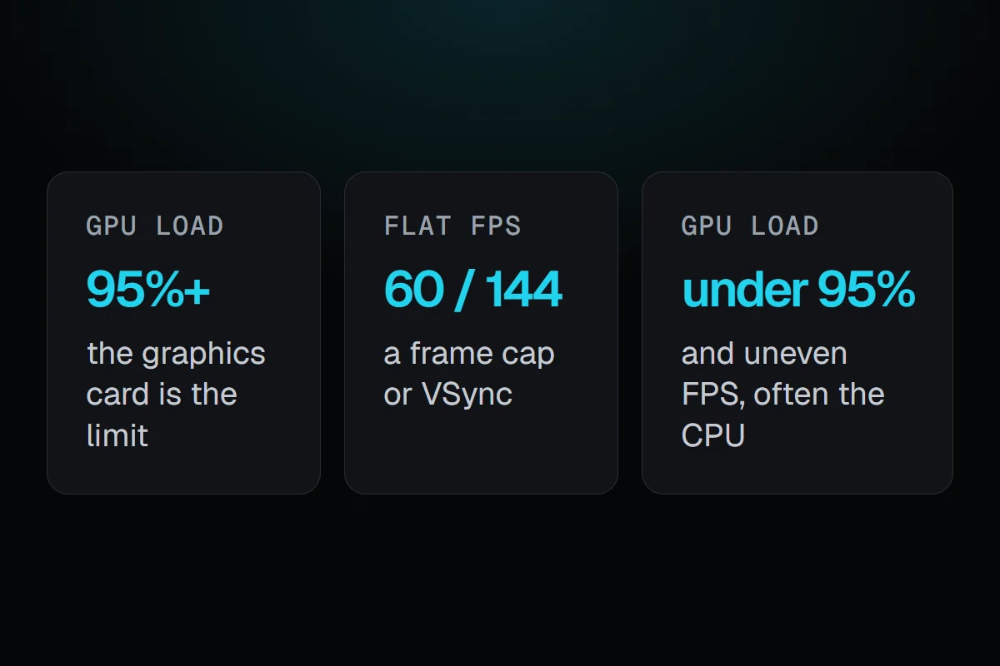

PC problems · FPS and games
GPU not at 100% usage but low FPS? Find what your card waits for
How RigSight tells whether a frame cap, VSync or the CPU keeps your GPU under 100% usage, why the card waits, and how to check a CPU bottleneck yourself.

The short answer
A graphics card under 95% load means it is waiting. If the frame rate sits flat at a round number, a cap or VSync is holding it. If it moves around and drops in busy scenes, the CPU or the game engine is the limit. Lowering the resolution tells you which. If FPS barely rises, it's the CPU.
Your GPU is not at 100% usage but your FPS is low, and that feels wrong. Why would the graphics card rest while the game struggles? The card is waiting. Something else decides how many frames get made, and the GPU finishes its share early. RigSight works out what it waits for from every play you've recorded, and below is how it does that and how you can check it yourself.
How RigSight caught it
Here is Dota 2 on the example PC that RigSight's site uses for its pictures. Over its plays the graphics card averaged 68% busy and never reached full load. On a live counter that looks like a card being held back by something. RigSight's Can it run better? card on the game's page reads it the other way round. The frame rate sat flat at 236 fps across the plays, so a frame cap or VSync set the pace, and the card had room to spare. Its answer is that you can raise the settings and keep 236 fps.
The card works from all your plays together, once a game has three plays with frame rates. When the frame rate stays flat at one number across them, it says a cap sets the pace. It says what share of the time your graphics card spent at full load, counting 95% and up as full. The cut-offs are RigSight's own rules of thumb. At full load 70% of the time or more, it says lower settings would give more frames. From 30%, it says the card is the limit in busy scenes. Below 30% with a cap in play, it says you can raise the settings and keep that frame rate, as with Dota above. Below 30% with no cap, it says something else sets the pace, most likely the CPU.
RigSight also reads the game's own saved graphics settings and shows them on the game's page under How it's set. That lets the card name the cap. It says when the game's own frame limit or VSync holds the frame rate, and it says when a game runs with no limit and VSync off faster than your screen can show. Reading those files right took some care. My own Cyberpunk 2077 settings file stores its frame limit as a number with a separate on or off switch, and RigSight first read the number and missed the switch. A limit I had turned off came through as 30 fps. I found it while testing the AI on pretend PCs and fixed it in RigSight's reading. The lesson carries over to anyone checking by hand. A cap can hide in more than one place, so check every one.
The FPS readings come from RivaTuner Statistics Server, which needs to be running before the game starts. RigSight's Games page has a button to install or start it. RigSight is free and open source.
Why a GPU is not at 100% usage
In most games, a graphics card that works as hard as it can sits at 95 to 100% load. Below that, it finishes each frame and then waits for the next one. That waiting is fine when you have the frames you want. It only matters when FPS is also lower than you expect.
There are four usual reasons the card waits.
- A frame cap or VSync tells the game to stop at a set number of frames.
- The CPU can't prepare frames fast enough. This is a CPU bottleneck.
- The game engine has a limit of its own, such as a capped menu, a physics tick or one busy thread.
- Windows or the laptop runs the card in a power saving mode, or the game runs on the wrong GPU.
Some games are simply limited by their engine. Older games and many simulation games lean on one thread, and no PC runs them much faster. If the same game is CPU limited on every PC you read about, that is likely the case.
How to check it yourself and fix it
First, rule out a frame cap or VSync
Look at the FPS counter first. If the frame rate sits flat on a round number like 60, 120, 144 or 165 while GPU load is low, it is a cap. The card makes those frames easily and then stops.
- In the game's display or graphics menu, turn off VSync and any Frame rate limit for the test.
- In the NVIDIA Control Panel, open Manage 3D settings and check Max Frame Rate and Vertical sync. On AMD, check Radeon Chill and Frame Rate Target Control in AMD Software.
- Check that RivaTuner, if you use it, has no frame limit set for this game.
If FPS climbs and GPU load rises with it, the cap was the reason, and nothing is wrong. You can keep the cap if you like it. A cap is often the better choice with a G-Sync or FreeSync screen, as VSync vs an FPS cap explains.
Second, try the resolution test for a CPU bottleneck
This is the clearest test, and it takes two minutes.
- Stand in the same busy spot in the game and note your FPS.
- Lower the resolution or the resolution scale a lot, for example from 1440p to 1080p or to 50% scale.
- Look at the FPS again.
Lower resolution makes the graphics card's job much smaller but leaves the CPU's job the same. If FPS rises a lot, the GPU was the limit. If FPS barely moves, the CPU or the engine is the limit. That is also why people see a CPU bottleneck at 1080p that disappears at 4K. At 4K the card becomes the slower part again.
CPU bottleneck symptoms
- GPU load stays well below 95% while FPS is lower than you want, and no cap is set.
- FPS barely changes when you lower resolution or graphics settings.
- FPS dips in crowded places, big fights or large open areas, and recovers in quiet ones.
- The total CPU usage looks modest, often 30 to 60%, but one or two threads are close to 100%.
- The 1% low FPS is far below the average, so the game feels uneven. See 1% low FPS meaning.
The total CPU number fools many people. A game can max out two threads and leave the rest idle, and Task Manager shows a low total. Here is how to see each thread.
- Press Ctrl + Shift + Esc and open the Performance tab.
- Click CPU, then right-click the graph and pick Change graph to > Logical processors.
- Play in a window or on a second screen and look for one or two graphs pinned near the top.
Third, check power mode and the right GPU
A card in a power saving state runs at low clocks and can look half busy. Set Settings > System > Power & battery > Power mode to Best performance, and play a laptop on its charger. If your plan changes by itself, see power plan keeps changing.
On laptops and PCs with built-in graphics, make sure the game runs on the dedicated card.
- Open Settings > System > Display > Graphics.
- Find the game in the list, or add it with Browse.
- Open its options and choose High performance, then restart the game.
What to do about a CPU bottleneck vs GPU bottleneck
If the GPU is the limit, you are in the normal state. Lower graphics settings or resolution scale for more frames, or turn on DLSS, FSR or XeSS if the game has them.
If the CPU is the limit, graphics settings give little back. These steps help more.
- Raise the resolution or graphics quality. It sounds backwards, but if the card is waiting anyway, better visuals cost you almost nothing.
- Lower the settings that load the CPU. Those are view distance, crowd or traffic density, physics, shadows from many lights, and simulation detail in strategy games.
- Close background apps that use CPU time. Sort Task Manager's Processes tab by CPU.
- Set a frame cap near the frame rate your PC holds in busy scenes. An even frame rate often feels better than a higher average that jumps around.
- Check that the CPU isn't hot and slowing down. See PC overheating while gaming.
What the numbers mean
- GPU load at 95 to 100% means the game is GPU bound. That is normal.
- GPU load under 95% with FPS flat at a round number means a cap or VSync.
- GPU load under 95% with uneven FPS and one or two CPU threads near 100% means the game is CPU bound.
- GPU load and GPU clock both low on a laptop point to the power mode, the battery, or the wrong GPU.
These are rules of thumb. Some games never quite reach 99% even when the card is the limit, so read the trend rather than one number. One session can mislead you too, which is why RigSight looks at every play. For a live look while you play, its overlay can show frame rate, GPU load, CPU load and clock speeds in a corner of the game, through RivaTuner in exclusive fullscreen games.
Do the resolution test tonight in your most demanding scene. It takes two minutes and tells you which part to spend money or settings on.
Questions people ask
Why is my GPU not at 100 usage?
Because it has nothing more to do. Either a frame cap or VSync stops it after the target frame rate, or the CPU can't prepare frames fast enough to keep it busy. Low usage on its own is not a fault, it only matters when your FPS is also lower than you want.
What are CPU bottleneck symptoms?
The usual signs are GPU load well under 95% with no frame cap, FPS that barely changes when you lower resolution or graphics settings, dips in crowded scenes and big fights, and one or two CPU threads near 100% in Task Manager while the total CPU usage looks modest.
CPU bottleneck vs GPU bottleneck, which is better to have?
Being limited by the GPU is the normal, healthy state in most games. The card runs at 95 to 100% and you trade settings for frames. A CPU limit is harder to fix with settings, and it often shows as uneven frame rates in busy moments.
Is GPU usage at 100% bad?
No. A graphics card is built to run at full load for hours while you play. What matters is its temperature and whether the fans keep it within the maker's limits.